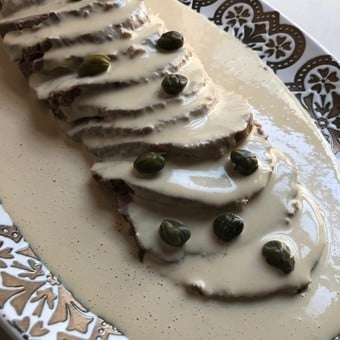

Vitel toné

In order to make this meal you need these ingredients:
- 1.5 kg of peceto (meat)
- 2 onions
- 4 anchovies
- 500g of mayonnaise
- 100g of tuna
Now lets make our zuchini tart
- boil the peceto for 1 hour
- cut the peceto into very thin pieces
- whit the help of a mixer, mix the anchovies, mayonnaise and tuna
- put the preparation above the peceto
Return to home page